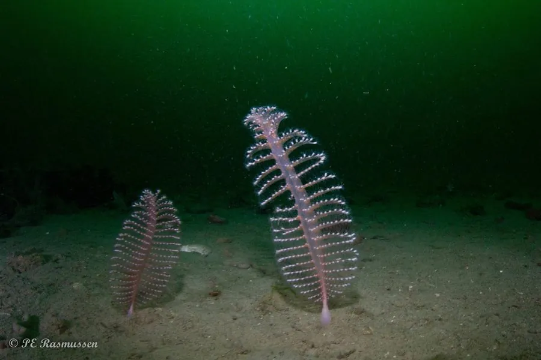

其他无脊椎动物 · 动物界
海鳃 Pennatula phosphorea

形状像羽毛笔的一种群体珊瑚，生活在泥质海底，受扰动时能发出磷光，是深海和冷水海域常见的底栖生物。
- 分类
- 门刺胞动物门纲珊瑚纲目海鳃目科海鳃科属海鳃属
- 栖息环境
- 东北大西洋和地中海的泥质、沙泥底质海底
- 地理分布
- 东北大西洋和地中海，从浅海到较深海域
- 保护级别
- 暂无评估；受拖网捕捞和底质破坏威胁
物种志
海鳃的群体呈羽状或羽毛笔状，中央有一根粗壮的肉质茎，两侧排列着许多小叶状的个体，群体长约 10–20 cm，颜色多为红色、橙色或粉红色，展开时像一支插在海底的羽毛笔。它属于刺胞动物门珊瑚纲，是群体生活的八放珊瑚。
海鳃生活在东北大西洋和地中海的泥质和沙泥底质海底，从浅海到较深海域都有分布，用肉质茎插入泥沙中固定身体，靠羽状排列的个体滤食浮游生物和有机颗粒。它的名字来源于拉丁语中的磷光之意，受到扰动时会发出淡绿色的生物光。海鳃是底栖生态群落的重要成员，为小鱼和甲壳类提供栖息空间；拖网捕捞和底质破坏会威胁它的生存，深海采矿和渔业活动也需要关注其影响。
形态与习性
- 食性滤食浮游生物和有机颗粒
- 体长群体长约 10–20 cm
- 形态群体呈羽状，像一支羽毛笔
- 发光受到扰动时会发出淡绿色生物光
- 栖息用肉质茎插入泥沙，生活在泥质海底
- 威胁拖网捕捞和底质破坏会影响种群
趣味知识
- 海鳃的外形像一支插在海底的羽毛笔，因此得名。
- 它受到扰动时会发出淡绿色的生物光。
- 海鳃用肉质茎插进泥沙固定身体，是底栖群落的常见成员。